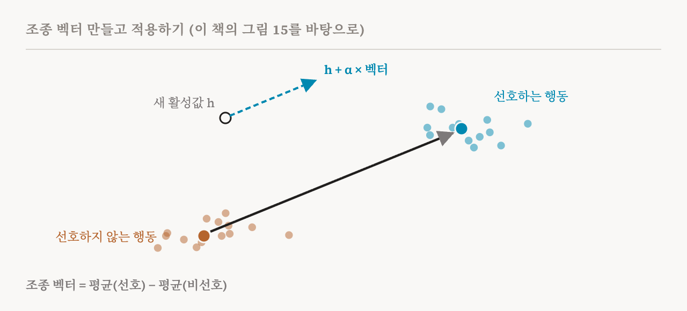
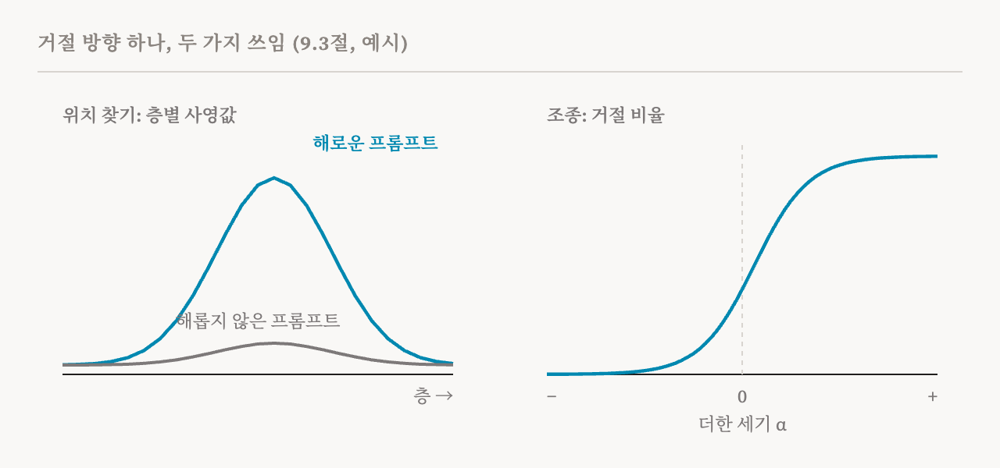

24편은 두 모델 사이에 무엇이 다른지 물었습니다. 이번 편은 이 책 9장의 나머지 두 질문, 9.2절과 9.3절(80–82쪽)을 다룹니다. 어떤 정보나 행동은 모델의 어디에서 가장 인과적으로 중요한가? 그리고 표현에 대한 이해를 모델의 행동을 바꾸는 데 쓸 수 있는가? 두 질문은 가까워 보이지만, 이 책의 주된 교훈은 둘의 차이에 있습니다.
지식의 위치 찾기
지식의 위치 찾기(knowledge localisation) 방법은 특정한 능력이나 행동과 활성값이 인과적으로 묶여 있는 층, 구성 요소, 부분 공간을 찾습니다. 3편에서 가장 잘 알려진 방법인 2022년의 인과 추적을 만났습니다. 예를 들어 어떤 사실의 주어를 이루는 단어들에 잡음을 더해 입력을 망가뜨린 뒤, 깨끗한 활성값을 한 곳씩 되살려서 어느 곳을 되살렸을 때 정답이 돌아오는지 봅니다. 가장 중요한 곳이 그 사실을 꺼내 오는 곳입니다. 관련 연구는 MLP 층이 사실에 관한 연관을 유난히 많이 담고 있고, 마치 열쇠와 값을 저장하는 곳처럼 작동하며, 이런 연관이 뒤쪽 층 MLP 가중치의 작은 부분 공간에 놓일 수 있다는 것을 발견했습니다. 이런 분석들이 위치 찾기의 바탕을 놓았습니다.
이 책의 실습 노트북은 에펠탑과 파리라는 고전적인 예로 GPT-2 Medium에서 이를 실행하고, 층마다 MLP와 어텐션 구성 요소가 얼마나 중요한지 비교합니다.
어디에 있는가는 어떻게 작동하는가가 아니다
이 책은 위치 찾기가 보여 주는 것에 대해 신중합니다. 위치 찾기는 정보가 가장 강하게 표현된 곳을 찾습니다. 모델이 그 정보를 쓰는지는 보여 주지 않습니다. 트랜스포머는 보통 필요한 것보다 훨씬 큰 용량을 가지고 있어서, 정보가 입력에 따라 여러 구성 요소와 부분 공간에 중복되어 표현되고 처리될 수 있습니다. 인과적 효과가 큰 구성 요소도 메커니즘의 일부일 뿐일 수 있습니다. 위치 찾기는 이해를 위한 쓸모 있는 출발점이지, 그 자체로 완결된 분석이 아닙니다. 3편에서도, 인과 추적이 짚은 사실의 위치가 그 사실을 고치기에 가장 좋은 곳을 잘 예측하지 못한다고 했습니다.
위치 찾기로 행동과 묶인 방향을 찾을 수도 있습니다. 예를 들어 거절에는 대략 저차원의 구조가 있어서, 활성 공간의 특정한 방향들이 해로운 요청을 거절하는 모델의 경향과 연결되어 있음이 밝혀졌습니다. 연구자들은 2편의 슬리퍼 에이전트도 트리거가 켜진 입력과 그렇지 않은 입력의 활성값을 층마다 비교해서 연구했습니다. 이런 분석은 모델이 행동과 관련된 정보를 어디에, 어떻게 담는지에 답합니다. 하지만 방향이나 층을 찾았다고 해서 그 행동 뒤의 메커니즘이 설명되지는 않습니다. 그러려면 16편과 17편의 회로 찾기 같은 더 세밀한 분석이 필요합니다.
표현 공학과 조종
표현 공학(representation engineering)은 가중치를 바꾸는 대신 표현을 직접 바꿔서 행동을 바꿉니다. 활성값 조종(activation steering)은 보통 모델이 실행되는 동안 중간 활성값, 대개 잔차 스트림에 벡터를 더해 모델의 출력을 옮기는 것을 말합니다. 위치 찾기가 무언가가 어디에 있는지 묻는다면, 조종은 행동을 바꾸는 특정한 벡터를 찾습니다. 다시 학습시키지 않으므로 모델을 통제하는 가벼운 방법입니다.
조종 벡터(steering vector)는 일정한 세기로 키워 활성값에 더하면 모델을 목표 행동 쪽으로 옮기는 활성 공간의 방향입니다. 학습된 프로브의 가중치에서 얻을 수도 있습니다. 7편에서 GPT-2의 행복 방향으로 만난 평균 차이도 널리 쓰이는 방법입니다. 모델이 선호하는 행동을 보일 때의 평균 활성값에서 선호하지 않는 행동을 보일 때의 평균을 뺀 것입니다. 추론할 때는 이 벡터에 세기 α를 곱해 어떤 층의 활성값에 더합니다.

이 책은 이것이 단순해 보여도 거절, 도움을 주는 정도, 문체 같은 행동을 믿을 만하게 바꾼다고 말합니다. 그래서 조종에는 두 가지 역할이 있습니다. 행동을 통제하는 방법이자, 프로브에 대한 인과적 시험입니다. 어떤 방향을 따라 개입했을 때 행동이 일관되게 바뀐다면, 그 표현이 그 행동에 인과적으로 영향을 준다는 증거가 됩니다. 이 책의 실습 노트북은 GPT-2의 감정을 조종한 다음, Llama-2-13B-chat에 표현 공학을 써서 편향의 방향을 찾고 모델을 더 공정한 답 쪽으로 조종합니다.
거절 벡터
이 책이 풀어 보이는 예는 거절 벡터(refusal vector)입니다. 모델이 거절하게 만드는 프롬프트들과, 그와 짝을 이루되 모델이 따라야 하는 프롬프트들을 모읍니다. 어떤 층의 거절 방향은 첫 묶음에 대한 평균 잔차 스트림에서 둘째 묶음의 평균을 뺀 것입니다. 어떤 활성값이든 이 방향 위에 사영한 값은 그 활성값이 거절을 얼마나 담고 있는지 잽니다. 이 방향을 따라 개입하면 거절이 그 방향에 어떻게 기대는지 시험할 수 있고, 앞선 실험들은 이런 개입이 거절을 크게 높이거나 낮출 수 있음을 발견했습니다. 이 책은 이 방향을 만들고 읽는 방식이 모델과 설정에 따라 달라질 수 있다고 덧붙입니다.

이 예는 이번 편의 두 절반 사이의 차이를 보여 줍니다. 층에 걸쳐 사영값을 재면 거절과 관련된 정보가 어디에 있는지 찾는 데 도움이 됩니다. 방향을 따라 개입하면 그것을 바꿨을 때 행동에 무슨 일이 일어나는지 시험할 수 있습니다. 뒤의 것은 인과의 증거를 주지만, 모델이 거절하기로 정하는 메커니즘 전체를 보여 주지는 않습니다.
곧은 선을 넘어서
7편은 모든 개념이 곧은 방향은 아니라는 것을 보였고, 조종도 그 뒤를 따랐습니다. 2026년의 한 방법은 활성값을 원래 공간을 휘어서 변환한 커널 PCA 공간으로 사영하고, 거기서 선형으로 조종한 뒤 되돌립니다. 다른 방법은 어떤 개념은 방향보다 다양체로 더 잘 표현된다는 발견에 따라 저차원 다양체를 따라 조종합니다. 이와 별개로 최적화 기반 방법은 과제 성능을 최대화하거나 개입했을 때 원치 않는 출력을 억누르는 것 같은 목표를 직접 최적화해서 조종 방향을 만듭니다. 두 평균의 대비로 바로 계산하는 방법보다 유연하지만, 계산이 훨씬 많이 듭니다.
특징을 시험하는 조종
조종은 다른 방법이 붙인 이름표를 확인하는 데도 쓸 수 있습니다. 어떤 SAE나 CLT 특징이 어떤 개념을 나타낸다고 생각한다면, 그 특징의 방향을 따라 조종하고 행동이 바뀌는지 보는 것이 뒷받침하는 증거가 됩니다. 이런 평가는 SAE 특징, 평균 차이 방향, DAS처럼 방향을 찾는 여러 방법을 비교하는 데 쓰였고, 20편에서 만난 RAVEL, MIB, AxBench 같은 벤치마크가 이를 중심으로 만들어졌습니다.
취약성과 불투명성
이 책은 두 가지 한계를 경고 상자로 짚으며 이 절을 마칩니다. 조종은 쉽게 깨질 수 있습니다. 어떤 분포, 모델, 과제에서 찾은 방향이 다른 곳에서는 통하지 않을 수 있습니다. 그리고 조종에 성공했다고 해서 그것만으로 메커니즘이 투명해지지는 않습니다. 개입은 여러 특징에 한꺼번에 영향을 주거나, 이미 진행 중인 계산과 비선형적으로 얽히거나, 깔끔한 메커니즘과 맞지 않는 의도치 않은 경로로 원하는 행동을 만들어 낼 수 있습니다. 2024년의 한 연구는 부분 공간을 따라 패칭하는 것이 바로 이런 착시를 만들 수 있음을 보였습니다. 그래서 조종은 인과적 영향의 증거로 읽어야 하지, 행동에 대한 설명으로 읽어서는 안 됩니다.
이 장을 한눈에
| 질문 | 방법 | 보여 줄 수 있는 것 | 혼자서는 보여 주지 못하는 것 |
|---|---|---|---|
| 두 모델 사이에 무엇이 다른가? | 모델 비교(24편) | 학습이 더하거나 바꾼 특징의 후보 | 그 특징이 정말 새것인지, 인과적으로 쓰이는지 |
| 정보는 어디에 있는가? | 지식의 위치 찾기 | 행동과 가장 인과적으로 묶인 구성 요소나 방향 | 모델이 그것에 기대는지, 메커니즘 전체 |
| 그것으로 행동을 바꿀 수 있는가? | 조종 | 표현을 밀면 행동이 바뀐다는 것 | 행동이 어떻게 만들어지는지, 다른 곳에서도 통하는지 |
이것으로 모델 중간을 읽는 부가 끝납니다. 이 부의 방법들은 주로 표현에서 무엇을 읽어 낼 수 있는지, 조종의 경우에는 그것을 바꾸면 무슨 일이 일어나는지 보여 주지만, 모델이 그것을 어떻게 쓰는지에 대한 이야기 전체를 보여 주지는 못합니다. 이 책의 다음 장은 이 연재가 지금까지 무시해 온 차원 하나를 더합니다. 시간입니다.
| 용어 | 뜻 |
|---|---|
| 지식의 위치 찾기 | 어떤 지식이나 행동과 활성값이 가장 인과적으로 묶인 구성 요소를 찾는 것 |
| 인과 추적 | 입력을 망가뜨린 뒤 활성값을 한 곳씩 되살려 어디서 답이 돌아오는지 보는 것 |
| 과매개변수화 | 과제에 필요한 것보다 훨씬 많은 파라미터를 가져 중복이 가능한 상태 |
| 표현 공학 | 가중치가 아니라 표현을 고쳐서 행동을 바꾸는 것 |
| 활성값 조종 | 추론 중에 중간 활성값에 벡터를 더하는 것 |
| 조종 벡터 | 일정한 세기로 더하면 모델을 어떤 행동 쪽으로 옮기는 방향 |
| 평균 차이 | 한 행동의 평균 활성값에서 다른 행동의 평균을 빼서 만든 방향 |
| 거절 벡터 | 모델의 거절 경향과 묶인 조종 방향 |
| 커널 PCA | 공간을 휘어서 변환한 곳에서 작동하는 PCA |
| 최적화 기반 조종 | 목표를 직접 최적화해서 조종 방향을 찾는 것 |
| 취약성 | 한 설정에서 통한 방향이 다른 설정에서는 통하지 않는 것 |
26편에서는 학습과 데이터 부를 시작합니다. 모델이 배우는 동안 바뀌는 모습을 지켜보면 무엇을 알 수 있는지입니다.